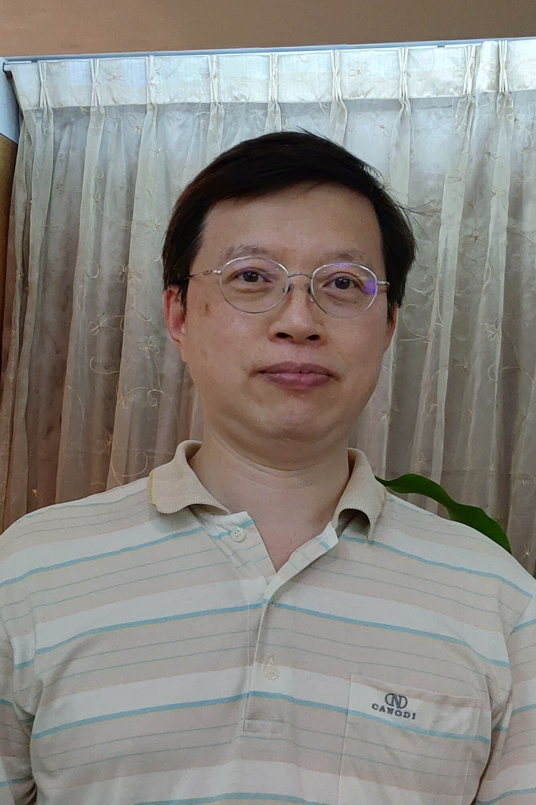

指導老師 侯以修老師
侯以修，又名修哥、sugar，建國中學第59屆畢業生，身為雙魚座男孩的他，個性天真單純，善解人意，他擁有超高的數學知識，卻沒有展現天才所具有的光環，反而以一個和藹可親的面孔去對待每一個學生。修哥是本屆數理資優班兩個班級的數學專任老師，雖然面對的是一群能力超群的學生，修哥仍然秉持著「從頭教起」的精神，決不放過任何一個沒聽懂的學生。許多簡單的公式和定理，即使是多數人早已耳熟能詳、運用自如，修哥只要看到一兩個學生臉上帶有些許疑惑，一定再為他多說一點。
到了專題課，更是我們的得力幫手。一旦我們在專題上遇到問題，例如找不到題目或是公式的證明卡住，修哥就會帶著具有專業知識的教授和老師，並且介紹給我們；或者是感覺壓力很大，修哥就會請我們數學專題的人喝飲料，遇到任何問題都能幫我們解決，是兼具實力、財力還有耐心的一個老師。
除了數學老師這個身分以外，修哥還有一個不為人知的身分，那就是「羽球王子」。修哥本人的羽球實力深不可測，據說還在學生時期，便已在台大校園縱橫沙場，並且獲得第一雙打的稱號，離開校園後並沒有就此中止自己在羽球球壇的統治生涯，除了擔任建中羽球社指導老師，假日經常練習羽球，還時常征戰大大小小的比賽，如今在建中仍是羽球最強沒有之一。
僅僅年長我們15歲的修哥，無庸置疑地成為我們的哥哥，但是相處模式更像是同班同學，修哥對於班級事務彷彿都深有同感，面對合唱比賽時，也毫不吝嗇的貢獻每一堂數學課。對於這個亦師亦友的角色，或許是本屆數資班同學一個特別的經驗。
在這一年多以來，修哥是個天真單純的、善解人意的、數學很強的、財力雄厚的、對待學生友善的、羽球很電的、很溫柔的一個老師。也是有了修哥的指導，我們的專題成發才能有如此的成果，讓我代表數學組及所有數資班的同學獻上最大的謝意。
指導老師 劉國棟老師

國棟老師除了帶領物理組各組的專題研究，平時也是兩個班的物理老師。雖然物理組的同學在專題上大多有大學教授的協助，但國棟老師仍然以渾厚的自身經驗為我們提供了偌大的幫助與提點，除了協助組員們修稿、用精練的文字為作品去蕪存菁，更是為大家提供了一個可以自由討論、輕鬆交流的學術環境。順帶一提，磁場與磁力關係的探討其實就是沿襲了老師先前的探究主題。對於物理組的同學們，國棟老師是研究精神的象徵！
關於國棟老師，他不僅是建中第37屆校友，現在也是建中物理教學領域的一員。除了在建中教過無數屆數資科學班、提拔多位物理奧林匹亞、科展國手外，國棟老師自己也在物理競賽、實驗物理中有一番研究，至今仍然寶刀未老！這聽起來簡直太棒了吧，但是沒有事情是完美的……老師憑著雄厚的實力，也為班上的物理段考成績帶來了多次「物理危機」──所幸從來沒有人被當掉。
不要看剛開學時老師一副很嚴肅的樣子，上過國棟老師課的人都知道，物理課最有趣的地方就是老師有時帶來的小故事，或是天外飛來一筆地用生動的描述將過於抽象的理論解釋得活靈活現。這包括了如何用簡易製作的電容放出足以電到所有人的電、為什麼比較長的棒子比較容易平衡在手上，以及怎麼不寫出積分符號就可以積分。
指導老師 林聰慧老師
我們生物組的同學可是時時受到聰慧老師的照顧啊，無論是心靈上的輔導，知識上的灌注，抑或是設備上的需求，老師都是義不容辭的幫助我們呢！身為一位生物老師，聰慧老師可說是樣樣精通！專題時間不需要去實驗室時，老師會帶我們去植物園認植物，不僅如此，建中身為一間歷史悠久的學校，也是擁有許多神秘的物種，無論是地面的蘚苔類植物，到好幾層樓高的裸子植物，又或是朵朵綻放的真雙子葉植物，可是讓我們目不暇給阿！但，這種類多到爆炸的植物對聰慧老師只是小菜一碟，隨口便可說出植物的名字以及相關知識，總能讓我們沒有去實驗室的日子一些驚喜，一些歡樂。本屆生物組人才濟濟，總共有八組，其中六組作生醫領域的主題，另外兩組則是動物相關主題。但不論是哪組，可都有使用到「分子生物」領域喔！而這個更是與我們老師的專業不謀而合。有著分生領域的專業，老師能給我們一些經驗、小技巧避免一再做白工，更在討論時提供專業的意見。這些意見，可能與教授的不同，但也因為如此，我們才能用另外一種角度看自己的研究，並激盪出耀眼的火花。
在聰慧老師的領導下，我們在各個領域快樂探索並發光發熱。從探討阿茲海默症到腦指蛋白對記憶的影響，從篩選胰臟癌藥物到探討尿素循環對降血脂藥物的影響，從內質網壓力的探討到慢性痠痛的研究，從果蠅模式生物的建立到紅火蟻的觀察。這些，是老師、實驗室和生物組所有同學這兩年的成果。在疫情幾乎籠罩整個高中生涯時，我們仍各自在不同領域下努力，也許成果不是最頂尖的，但我們收穫了最豐碩的過程。大家都秉持著，站在巨人的肩膀上進一步作出對於人類發展有意義的研究，希望大家在接下來的時間能感受到我們Betelgeuse的精神，更期待各組都能綻放出閃耀的光芒！
指導老師 張祐穎老師
祐穎老師熟稔各種實驗室儀器設備，每當專題實驗陷入瓶頸時，他豐富的知識總像黑暗中的光束，提出新穎的解決方案，帶領我們改善實驗過程，突破瓶頸！在高一還沒去實驗室的時候，老師會帶我們閱讀實驗室發表的論文，教導我們如何架構性的去蕪存菁，獲得論文裡的重要知識，這使的我們在之後面對教授的提問以及閱讀新的論文都能得心應手的應付自如！也因為有先對實驗室的主題做了解，使得我們都能夠快速進入狀況，加快一開始適應的過程。在取得實驗的小小成果時，老師也會讓我們對整個化學組以及老師報告，老師與同學的建議都能夠幫助我們改善實驗，問出的問題也能促進我們釐清理論的盲點，如此就能逐步改善精進我們的專題研究！
祐穎老師不僅曾經當過建中的總務主任，也曾經當過數資班的專任老師，因此不論是學校的各種事情，抑或是數資班會遇到的困難，老師都好像我們的大學長，能夠以他豐富的經驗提供給我們許多的意見。除了作為專題的指導老師外，祐穎老師同時也是25、26班的化學老師，他上課時總是教導大家許多講義外的實驗知識，而這些知識也反應在段考的手寫題目上，從還原電位表的建立，到辣椒素的
IUPAC 名稱，每一次段考大家都被老師知識的廣度所震懾，也讓大家歸納出了「減 20 分定理」，能夠準確估計段考平均呢！
指導老師 許雅淳老師
雅淳老師，是資訊科唯一的正式女老師，除了教學認真負責、以簡馭繁外，也負責校內資訊競賽等等的大小事，真可謂是十項全能。老師往往身穿格子襯衫與牛仔褲，抱著蘋果筆電，悉心指導我們的專題，在受到雅淳老師的親炙下，我們資訊組的各組專題都有了很好的進步與表現。除了資訊的知識外，老師也常常跟我們分享學長的故事，每每聽到「之前有個學長......」開頭時，我們就知道老師要跟我們分享令人會心一笑的小故事了！老師雖然專長於電腦視覺，但在資訊的各個領域亦是得心應手，不管問她什麼資訊問題都能夠立即的回答，並給予合適的解方。
這一年多以來，雅淳老師除了教我們豐沛的資訊知識與研究態度外，更是展現出了身為人師的風範。老師是一位資訊能力高強、溫柔熱情的老師，就是因為老師諄諄教導的灌溉，我們成發之苞才能在這春夏之交綻放。
指導老師 江豪章老師

江老師是本屆數理優資班與科學班的地球科學專任老師，平常上課細心講授，也會細心回答同學們問的問題，教學風格令大家印象深刻。特別是課本的內容外，每個學期都還會讓我們做一份與時事相關的地科報告，除了認識更多地科知識外，大家講述自己挑選的題目，充分展現個人特色，也是地科課珍貴的回憶呢！在專題研究的時候，老師不會嚴格要求進度，讓地科組的同學有更多更充分的時間思考，也能更自由研究自己所愛的主題，當遇到困難時，老師也會循循善誘，引導我們想到解決辦法。建中的一大特色是自由學術，豪章老師的課也是，讓我們能自由發揮，翱翔於地科世界！